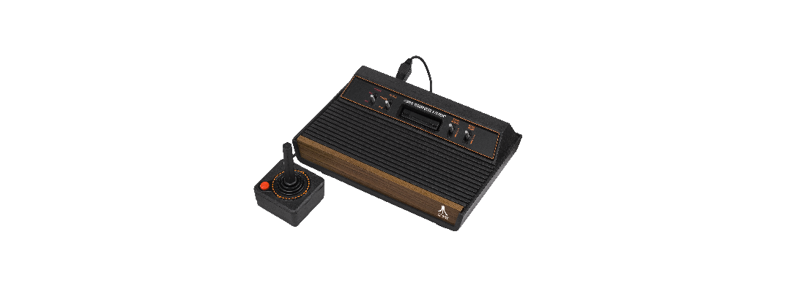
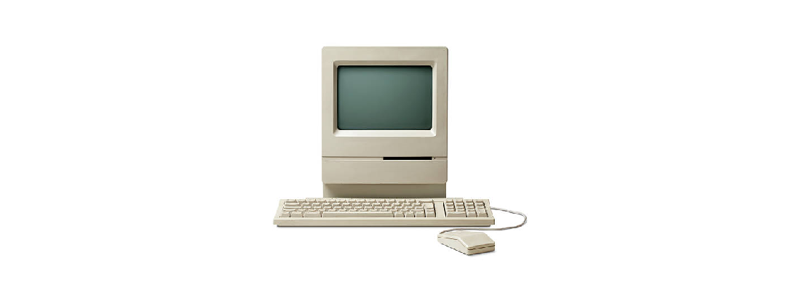
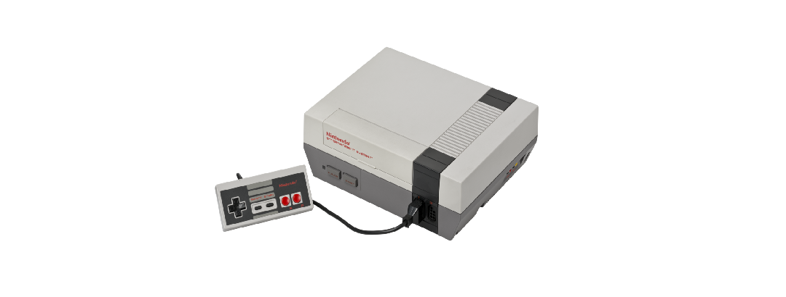
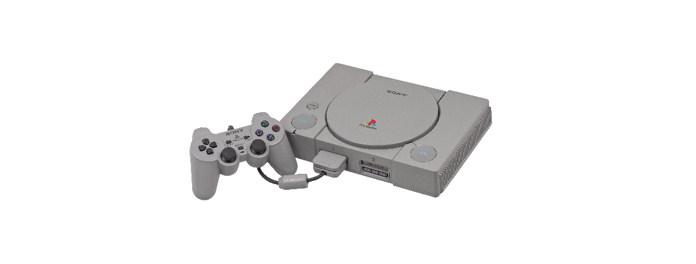
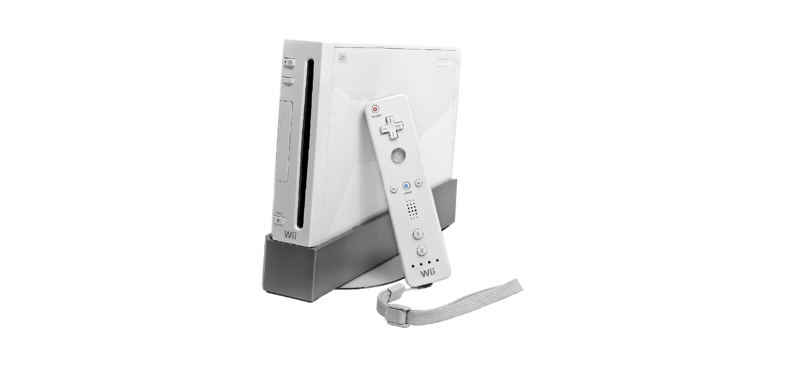
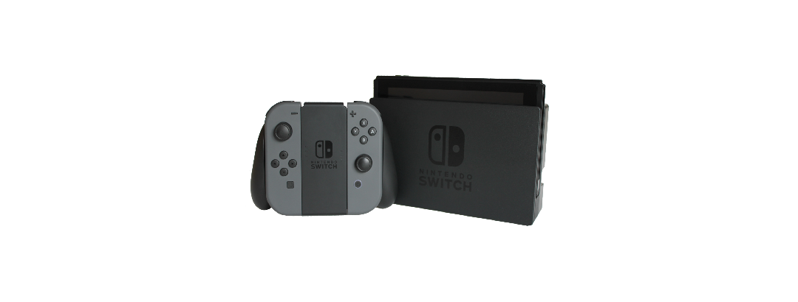

Dispositivos que marcaram a historia
postado 15 de abril de 2025






Diversos dispositivos "gamers" marcaram a história, mas alguns em especial merecem destaque:
-
💻 1. PC (anos 80 até hoje)
Versátil, evoluiu junto com a tecnologia. Base de gêneros como estratégia, simuladores, MMOs e
jogos indie.
-
🎮 2. Atari 2600 (1977)
Pioneiro dos consoles domésticos. Colocou os videogames na sala de estar.
-
🎮 3. Nintendo Entertainment System
Salvou a indústria dos games e lançou clássicos como Mario e Zelda.
-
🎮 4. PlayStation (1994)
Inovou com CDs e gráficos 3D. Mudou o padrão dos jogos para sempre.
-
🎮 5. Nintendo Wii (2006)
Tornou os games acessíveis a todas as idades com controles por movimento.
-
🎮 6. Nintendo Switch (2017)
Mistura de portátil com console de mesa. Um dos maiores sucessos da Nintendo.
Leia mais